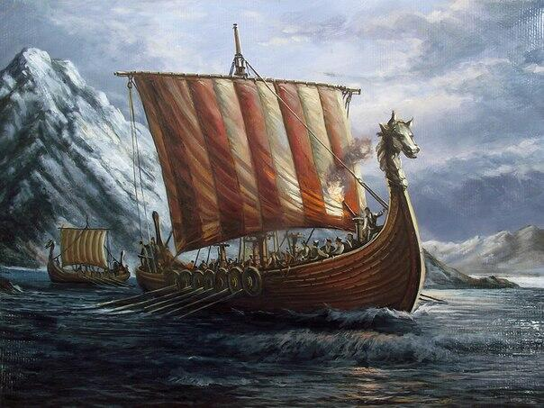

Епоха вікінгів
Епоха вікінгів
 Дракар
Дракар
Драка́р (норв. drakkar від дав.-сканд. drage — «дракон» і kar — «корабель», буквально — «корабель-дракон») — довгий вузький дерев'яний човен вікінгів з високо заломленим носом і кормою.
Кораблі приводилися в рух веслами й у пізніший час рейковим вітрилом. Дракари мали стрункий, довгий, вузький, легкий дерев'яний корпус із малою осадкою запроектований для швидкості. Мала осадка корабля допускала навігацію у водах глибиною лише один метр і дозволяла швидку висадку. Його легка вага надала можливість переправляти судно волоком. Кораблі були також симетричні, дозволяючи судну швидко змінити напрям руху на протилежний. Дракари були обладнані веслами уздовж майже повної довжини човна. Пізніші версії мали прямокутне вітрило на єдиній щоглі, яке використовувалося для допомоги веслярам, особливо протягом далеких подорожей.
Використовувалися для військових дій, перевезень, а також для дальніх морських плавань.
Розміри дракарів коливалися від 35 до 60 футів (від 10 до 18,5 м). На носі кріпилася різьблена голова дракона (звідси й назва типу корабля), а по бортах розташовувалися щити. Не кожен корабель з головою дракона був дракаром — голова дракона символізувала високий статус власника судна, а сам корабель міг бути будь-яким. При наближенні до дружніх земель голова дракона забиралася — за повір'ями народів Півночі, вона могла налякати або розлютити добрих духів. Якщо вікінги бажали миру, вождь із носа дракара показував щит, внутрішній бік якого був пофарбований у білий колір. Дракари приводилися в рух веслами і найпростішим вітрилом. Керування здійснювалося за допомогою кермового весла з коротким поперечним румпелем, встановленим на правому борту. Великі кораблі мали до 35 пар весел («Великий Змій», побудований для короля Олафа Трюггвассона взимку 999/1000 року) і розвивали швидкість до 10-12 вузлів, що для кораблів такого класу може вважатися видатним показником.
На дракарах вікінги досягали Ісландії, Ґренландії та Північної Америки.
Дракари є аналогами іншого типу суден вікінгів — снекарів (від snekja — «змія» і kar — «корабель»). Снекари мали менший розмір (до 30 метрів) і меншу команду (до 60 осіб). Були також обладнані квадратним вітрилом, мали 25-30 пар весел й у відкритому морі могли розвивати швидкість 15-20 вузлів.
Дракари, в силу своєї малої посадки, були зручні для пересування по річках. З цієї ж причини, дракари часто використовувалися також і для раптової вилазки військ на атаковану територію. Низькі борти робили дракар слабко помітним на тлі морських хвиль, що дозволяло зберігати маскування до останньої миті.
Ряд дракарів зберігся до наших днів — нині вони експонуються в музеях кораблів вікінгів у Норвегії та Данії.